Festes
- Festival Nacional de la Marinera: aquesta festa té lloc a Trujillo, es tracta d’un concurs de ball anomenat “Marinera”. Aquest ball és molt elegant, es realitza amb parelles fent moviments característics amb un tovalló blanc, i en quant la vestimenta l’home ha de portar un ponxo i amb un barret i la dona un vestit regional.
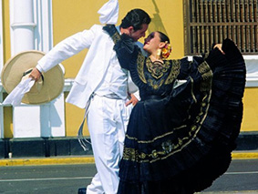- Festa de la Verge de la Candelaria: té lloc en Puno el 2 de Febrer, i el que es fa es venera la Verge de l’església de Sant Joan.
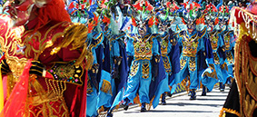- Carnaval: es fa en tot el Perú en la quinzena de Febrer, i els carnavals que més destaquen són d’Ayacucho. Cataos, Cajamarca i Tacna, entre altres.
- Setmana Santa: festival religiós que es celebra en tot el Perú, els llocs més especials on es celebra aquesta festivitat és en Tarma i Trujillo.
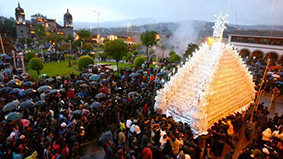- Festival Internacional de la Verema d’Ica: té lloc a Ica en el primer cap de setmana de Març. És una festa en el que es fan concursos de vins i pisco.
- Concurs Nacional del Cavall de Pas: aquesta celebració té lloc el tercer diumenge d’Abril. El cavall de pas és una raça de cavall peruà que vénen dels cavalls dels espanyols durant el període de conquista.
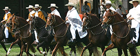- Senyor de Muruhuay: es celebra principalment el 3 de Maig encara que duri tot el mes. En aquest mes està ple de festes amb danses típica de la regió i amb menjars tradicionals.

- Verge de Chapi: també es denomina Verge de les Purificacions. El seu dia és l’1 de Maig, és una festa religiosa que hi ha música i menjar.
- Inti Raymi: aquesta festa té lloc en Cuzco el dia 24 de Juny. Es tracta de la tradicional festa del sol que en les mateixes dates té lloc el solstici d’hivern i les collites.
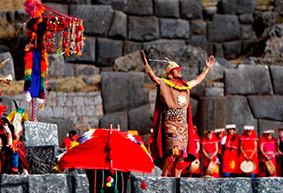-Quyllurit’i: té lloc en la ciutat de Cuzco entre Maig i Juny. És la peregrinació de les nacions indígenes més importants.
-Festes Pàtries: es fa el 28 d’aquest mes es celebra el Dia de la Independència del Perú, amb moltes festes acompanyades de música, balls, gastronomia, misses, entre altres.
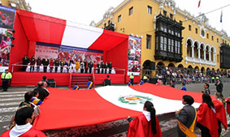- Santa Rosa de Lima: aquesta festa té lloc el 30 d’Agost i es celebra la Santa Patrona de les Amèriques i les Filipines. Aquest dia els fidels visiten el seu santuari i ermita que va construir.
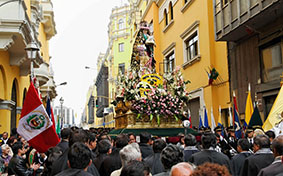- Evocació i escenificacions de la Festa Inca del Warachicuy: aquesta festa té lloc en la ciutat de Cuzco, el tercer diumenge de Setembre. És una celebració en la qual es manifesten l’art tradicionals d’aquesta cultura.
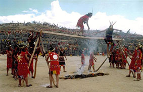- Senyor dels Miracles: en el mes d’Octubre els fidels celebren al Crist Morè i en el dia mes important es fa una festivitat amb una processió on els fidels es vesteixen amb uns hàbits morats resant i cantant.
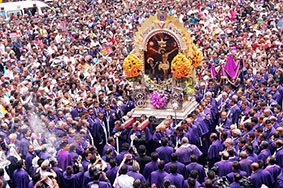- Dia de tots els Sants i dia dels difunts: té lloc el dia 1 i 2 d’aquest mes, i es celebra en tot el Perú, però el més important són en Cajamarca i Piura.
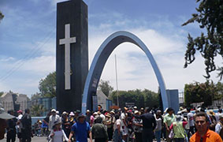- Santuranticuy: té lloc en la Plaça Major de Cuzco el dia 24 de Desembre. És una celebració d’art popular, que els artesans ofereixen les seves obres als millors preus.
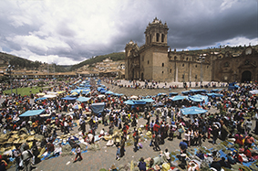